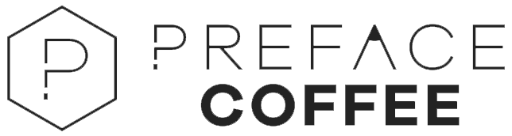
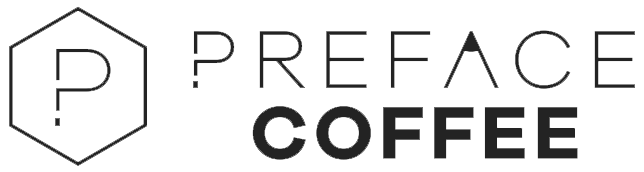

If u havent heard about preface coffee shop.it is near causeway bay. We are thinking about how to reduce polution in preface coffee.More info about preface coffee if you press the logo.Anyways our ideas are:
For every item bought in preface.We donate 8 dollars to team seas. If u dont know whats team seas it is a donation to remove 1 pound of trash for $1 us.If you want to donate yourself you can click on the teamseas logo.
We will have three bins maybe made out of cardboard one for plastic one for glass one for paper so we can recyle stuff.
We can use metal straws or paper straws. We can reuse metal straws and for paper straws we can place it in the paper recycle bin.
 
